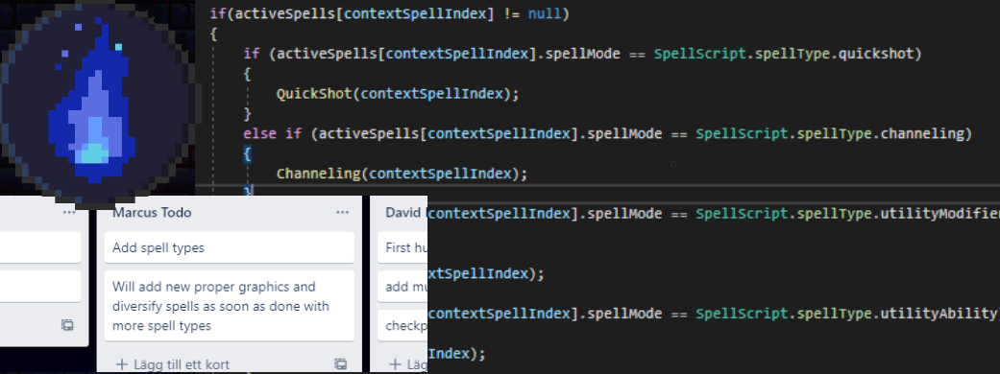

Week 5 - Back to the Game
Not much work was done on the game during Easter week, as everyone in the group was busy with other more pressing assignments.
Coming back after Easter however, things quickly got back on track. Early on in the week the group held a meeting to discuss how we were going to proceed with the game as well as dividing up tasks for who in the group should work on what. I personally took it upon myself to work on a spell system for the game. This meant multiple different spells with different spell types (for example bouncing spells, area of effect spells, cluster spells, beam spells, utility spells) as well as a system that allowed the player to equip/unequip these spells in three separate spell slots tied to three different user inputs.
After we split up the tasks into different categories, we looked into dividing up tasks for who in the group should work on what. We made a week-by week plan where we divided the tasks into different categories. These categories were “Player”, “Enemies”, “Maps”, “UI” and “Audio” where we had placed the higher prioritized features to be completed first. Out of these features, I personally took it upon myself to work on a spell system for the game during week 5. This meant multiple different spells with different spell types (for example bouncing spells, area of effect spells, cluster spells, beam spells, utility spells) as well as a system that allowed the player to equip/unequip these spells in three separate spell slots tied to three different user inputs.
As I started on the spell system I wanted the system to be modular and easily expanded upon later in development. I achieved this by creating a dictionary of sorts where the game manager (a component commonly used in Unity) contained all the different spells in the game as well as methods which could be used by the player or enemies to easily get the data for any specific spell . It was also easy to create a system for dropping in-hand spells as the game manager could simply instantiate a spell on the floor of the corresponding type. I also took it upon myself during the first week to create an enemy aggro system so that enemies would agro if the player fired a spell within a close proximity.